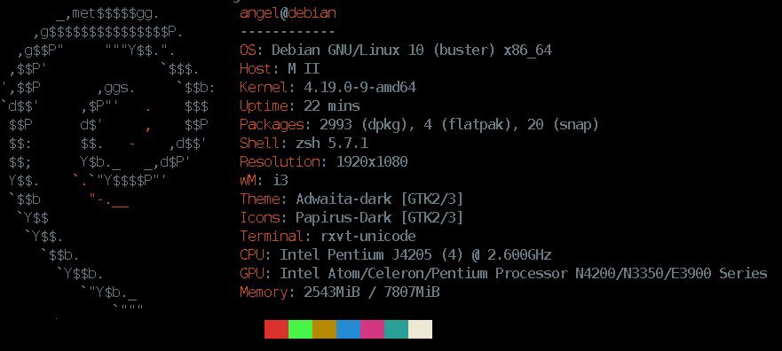

Neofetch es una aplicación para terminal desarrollada en bash, que muestra información del sistema, pc, servidor, etc…

Ha diferentes opciones de personalización, mediante el archivo de configuración. Vamos a ver como se instala y configura.
En debian, ubuntu, raspberry os,…
sudo apt install neofetch
Para iniciar la aplicación, tan simple como:
neofetch
De forma automática, creará un nuevo archivo de configuración.
nano ~/.config/neofetch/config.conf
Aquí podemos añadir que aparezca más información como nuestra ip pública, privada, usuario,…
Si una vez configurado, quieres que te aparezca neofetch por defecto, sin hacer uso del archivo de configuración, ejecutaremos:
neofetch --config noney
O especificar una ruta por defecto del archivo de configuración
neofetch --config ~/dotfile/neofetch/config.conf
Publicado por Angel el martes 30 junio del 2020
También te puede interesar:
Powered by org-bash-blog
Writing in orgmode whith emacs

Este obra está bajo una licencia de Creative Commons Reconocimiento-NoComercial-CompartirIgual 4.0 Internacional.